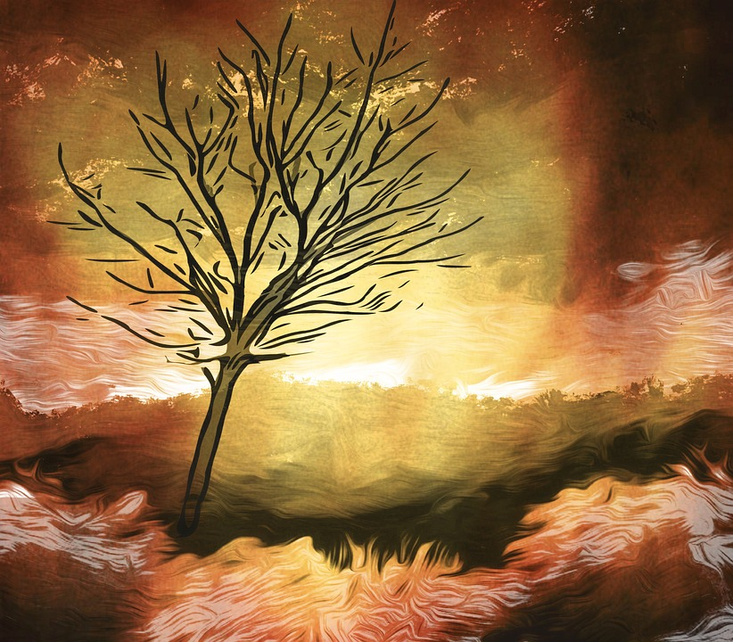

ԿԱՆԽԱՐԳԵԼՈՒՄ

Հրդեհի կանխարգելման համար հետևե՛ք
հետևյալ խորհուրդներին:
- Անտառ մի՛ նետեք չմարած ծխախոտը:
- Մի՛ վառեք խոտը, ցածրաճ
բուսականությունը կամ
աղբը փողոցում, քաղաքային
կանաչապատ գոտում, դաշտերում
և անտառի մոտակայքում:
- Մի՛ բորբոքեք կրակը բաց
հրապարակներում, չոր խոտի կամ
տերևների մոտ խորոված անելիս:
- Խուսափե՛ք այնպիսի
աշխատանքներից, որոնք կարող
են հրդեհ առաջացնել:
- Մի՛ թողեք աղբը անտառում, քանի որ
ինքնայրման հավանականություն կա:
- Մի՛ օգտագործեք բաց կրակ և մի՛
ծխեք բերքահավաքի ժամանակ:
- Ուշադրություն դարձրեք նշանների՛ն,
որոք արգելում են մուտքը բարձր
հրդեհավտանգ գոտիներ:
Հրդեհները կարող են առաջանալ բնական երևույթներից,
օրինակ՝ կայծակի հարվածից (դա հազվագյուտ տեսակ է) և կարող են լինել մարդածին՝
- անզգույշ (կարճ միացում,
սարքավորումների
տաքացում, աշխատանքների
ժամանակ կայծեր).
- հանկարծակի բռնկում
(պիկնիկների ժամանակ անպատասխանատու վարք և
դյուրավառ նյութերի նետում).
- կանխամտածված՝ երբ
հրդեհը կազմակերպվում է գիտակցաբար.
- գյուղատնտեսական
աշխատանքների իրականացման ժամանակ (մոլախոտերի և այլ բուսական
թափոնների այրում, որը խստիվ արգելվում է
հրդեհային անվտանգության մասին օրենքով):
Ցավոք սրտի, մարդածին
հրդեհները համարվում են
ամենատարածվածը:
Երբ հրդեհը մարված է՝
- դուրս եկե՛ք տնից և անմիջապես
հանգցրե՛ք անմիջական հարևանությամբ
գտնվող հրդեհի օջախները,
- կազմակերպե՛ք հերթապահություն քանի դեռ
հրդեհի բոլոր օջախները չեն մարվել, քանի
որ տան մոտ նույնիսկ ոչ մեծ կրակը կարող
է հանգեցնել կրակի կրկին բորբոքմանը:
Տարհանումը պետք է կատարվի միայն
բացարձակ անհրաժեշտության դեպքում,
դեպի այն վայրեր, որտեղ կրակն ու ծուխը
չեն հասել՝ համապատասխան մարմնի
կողմից տրված ցուցումների համաձայն: